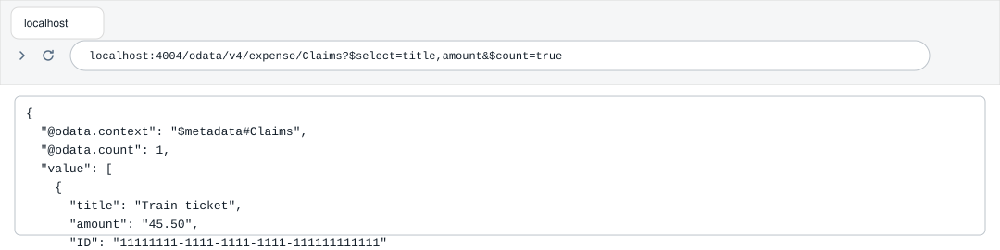
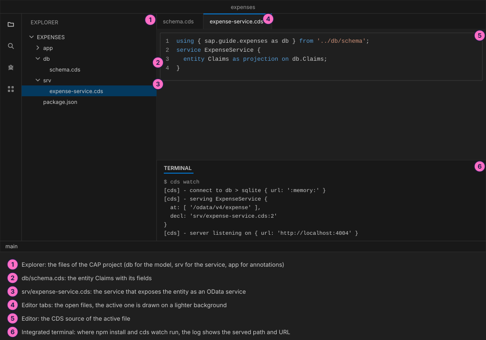
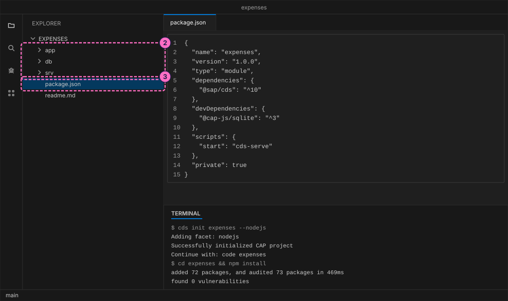
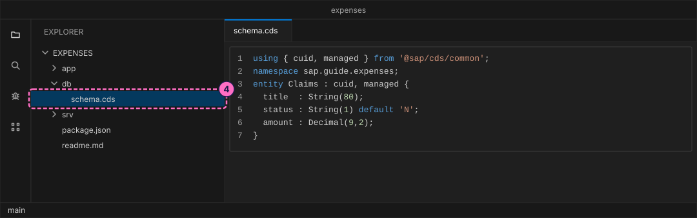
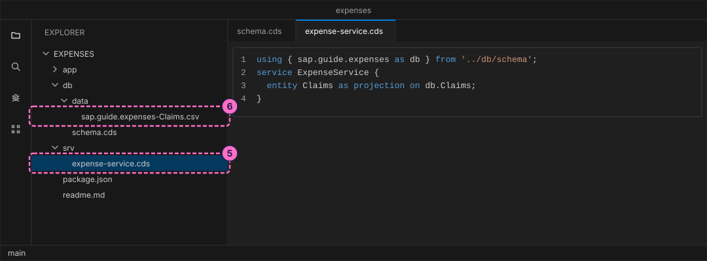
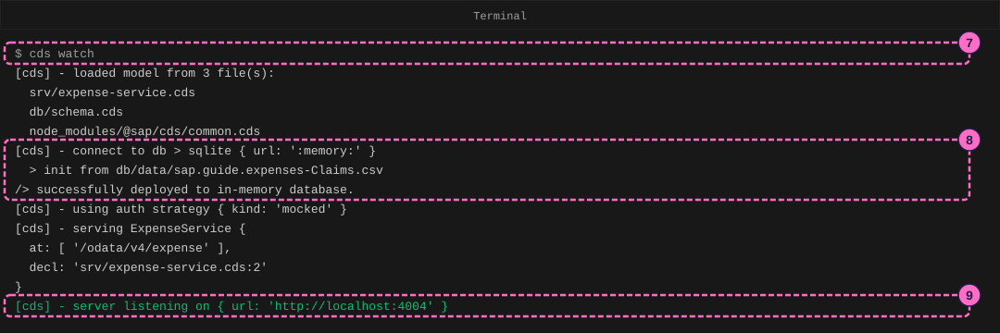
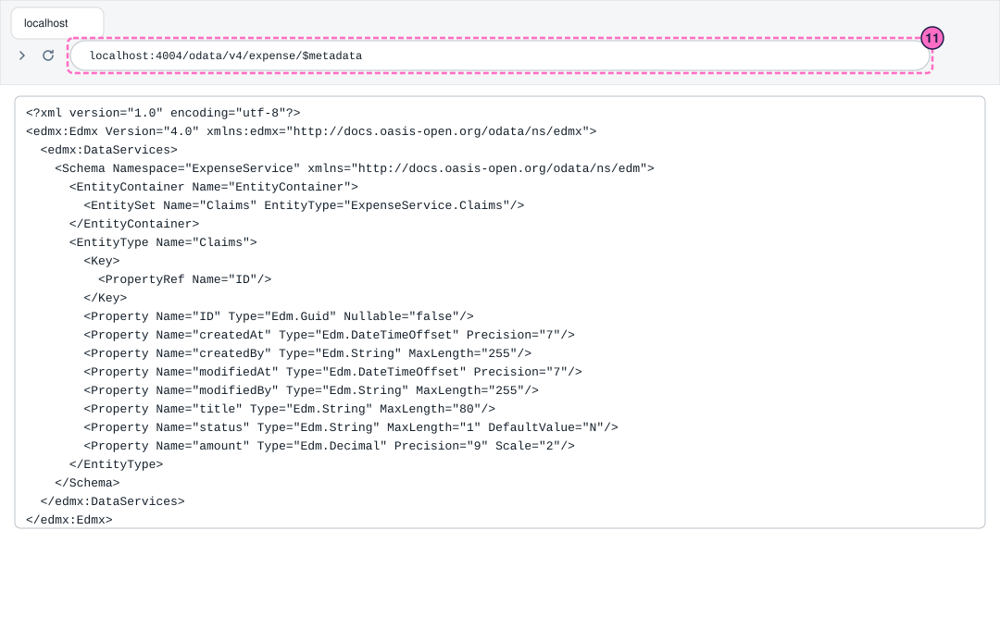
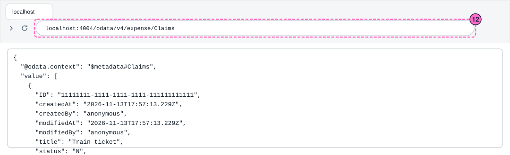

SAP Guide: Your First CAP Service
|
This content was generated with the assistance of AI and should be verified against the official documentation before being relied on in production. |
Checked on 2026-11-13 against CAP Node.js 10.2 (@sap/cds 10.2.2, @sap/cds-dk 10.2.1) and Node.js 24.21.
What you build
This is a teaching model built with CAP. It is not SAP S/4HANA or SAP SuccessFactors and does not reproduce their screens.
You build a small service for expense claims. You describe one entity, Claims, with a title, a status and an amount, and one service, ExpenseService, that offers it. A CSV file gives the service one claim to start with. CAP turns these three small files into a running web service with a database behind it, and you read its answers in the browser: the service description and the list of claims.

Before you start
-
No account is needed: the CAP tools install from the public npm registry without signing in. Installing
@sap/cds-dkand@sap/cdsmeans accepting the SAP Developer License Agreement, version 3.2, which the packages state themselves; the lab README names it. -
Install Node.js 22.12 or newer.
node -vprints the version. -
Use a code editor such as Visual Studio Code, and a terminal. A browser shows the results.
-
Read CAP Getting Started and CAP Concepts first, or at least know what an entity, a service and OData are.
-
The figures are drawings of the editor, the terminal and the browser, not screenshots. A highlighted box with a number marks the file, the line or the address of the step with the same number.
Steps
The numbered overview shows the editor that you use in the first steps. The regions are the explorer with the project files, the editor with the open file and the terminal in which the commands run.

Create the project
-
Install the CAP command line tools once. The package is named
@sap/cds-dkand it brings the commandcds. Ask for the version afterward:npm install --global @sap/cds-dk cds versionThe first lines of the answer name the versions that this guide was checked with:
@sap/cds 10.2.2 @sap/cds-compiler 7.2.1 @sap/cds-fiori 2.3.0 @cap-js/db-service 3.2.0 @cap-js/sqlite 3.1.3 -
Create the project folder. The option
--nodejschooses the JavaScript runtime of CAP:cds init expenses --nodejsThe command prints
Successfully initialized CAP projectand creates the foldersapp,dbandsrv, pluspackage.json, a readme and an editor configuration. Without--nodejsit creates the folders but asks you to choose a runtime withcds add nodejs. -
Go into the folder and install the project’s dependencies.
package.jsonlists two: the CAP runtime@sap/cdsand, as a development dependency,@cap-js/sqlite, the in-memory database that CAP uses while you develop. Open the folder in your editor (in Visual Studio Code,code .).cd expenses npm install
Describe the data and the service
The db folder holds the data model, the srv folder holds the services. Both are written in CDS, the text language of CAP.
-
Create the file
db/schema.cds. The first line imports two ready-made building blocks from CAP:cuidadds a key fieldIDthat CAP fills with a new unique value, andmanagedadds the fieldscreatedAt,createdBy,modifiedAtandmodifiedBy, which CAP fills for you. Thenamespaceprefixes the names in the database. The entity then lists its own fields with their types.using { cuid, managed } from '@sap/cds/common'; namespace sap.guide.expenses; entity Claims : cuid, managed { title : String(80); status : String(1) default 'N'; amount : Decimal(9,2); }Source: CAP: Domain Modeling

-
Create the file
srv/expense-service.cds. A service is a window onto the data: it names the entities that outsiders may use. HereClaimsis a projection on the entity of the model, which means it shows its fields unchanged. CAP serves every service as an OData service, the web protocol that browsers and SAP apps understand.using { sap.guide.expenses as db } from '../db/schema'; service ExpenseService { entity Claims as projection on db.Claims; } -
Create the folder
db/dataand in it the filesap.guide.expenses-Claims.csv. CAP loads every CSV file indb/datainto the database when the server starts. The file name must be the namespace, a dash and the entity name, and the first row names the fields:ID,title,status,amount 11111111-1111-1111-1111-111111111111,Train ticket,N,45.50Source: CAP: Providing Initial Data

Run the service
-
In the terminal, in the project folder, start the server in watch mode:
cds watch -
Read the log. CAP lists the model files it loaded, connects to a database that lives only in memory (
sqlite { url: ':memory:' }), fills it from your CSV file (init from db/data/sap.guide.expenses-Claims.csv) and reports that the database is deployed. -
The last lines name the service path and the address.
ExpenseServiceis served at/odata/v4/expense(CAP derivesexpensefrom the service name) and the server listens onhttp://localhost:4004. The lineusing auth strategy { kind: 'mocked' }says that no real login is used while you develop. Leave the terminal running:cds watchrestarts the server when you save a file.
The figure leaves out the banner that
cds watchprints before the first line.
Read the service in the browser
-
Open http://localhost:4004. CAP generates a welcome page that lists the service
Expense Servicewith the entityClaimsand a link to/$metadata. It states itself that it is a generated page that you can replace with your ownapp/index.html. -
Open http://localhost:4004/odata/v4/expense/$metadata. The answer is the service description, written in XML: the entity set
Claims, its keyIDand the properties that come from your model, among them the four fields ofmanaged. The real answer is longer, because CAP adds annotations that describe the fields; the figure keeps the schema.
-
Open http://localhost:4004/odata/v4/expense/Claims. The answer is JSON with your claim in
value: the fields of your CSV file, and themanagedfields that CAP set when it loaded the data (createdByisanonymous, because nobody logged in).
-
Ask for less. A query option after the question mark chooses fields and asks for a count: open http://localhost:4004/odata/v4/expense/Claims?$select=title,amount&$count=true. The answer holds the count and only the title and the amount; the key
IDis always part of the answer.{"@odata.context":"$metadata#Claims","@odata.count":1,"value":[{"title":"Train ticket","amount":"45.50","ID":"11111111-1111-1111-1111-111111111111"}]}Your browser may show this answer on one line, as above, or formatted. The data is the same.
Check the result
-
The terminal shows
server listening on { url: 'http://localhost:4004' }and no line that starts with[ERROR]. -
/odata/v4/expense/Claimsreturns the claimTrain ticketwith the statusNand the amount45.50. -
/odata/v4/expense/$metadatalists an entity setClaims.
Variations
-
Add a second line to the CSV file, for example
22222222-2222-2222-2222-222222222222,Taxi,N,18.00, and save it.cds watchrestarts, andClaims?$count=truereports two claims. -
Add a filter:
Claims?$filter=amount gt 20&$select=title,amountreturns only the train ticket.
What can go wrong
| Symptom | Cause | Fix |
|---|---|---|
The log shows |
A typo in a CDS file, here |
Correct the text at the position named in the message and save. |
|
The CSV file name does not match the namespace and the entity (for example |
Rename it to |
The address of a wrong entity set answers HTTP 404 |
|
Compare the name with the entity set in |
|
The tools were not installed, or the global npm folder is not on your |
Run |
Clean up
Press Ctrl+C in the terminal to stop cds watch. The database lived only in memory, so there is nothing to delete. The folder expenses is yours to keep: later guides build on it.
Where to go next
-
Next guide: Model a Domain and Add Custom Logic in CAP.
-
Reference: CAP Getting Started.
-
Reference: CAP Concepts.